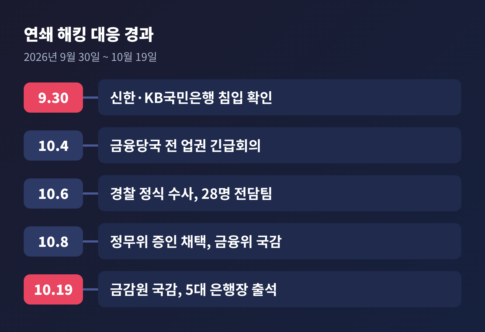
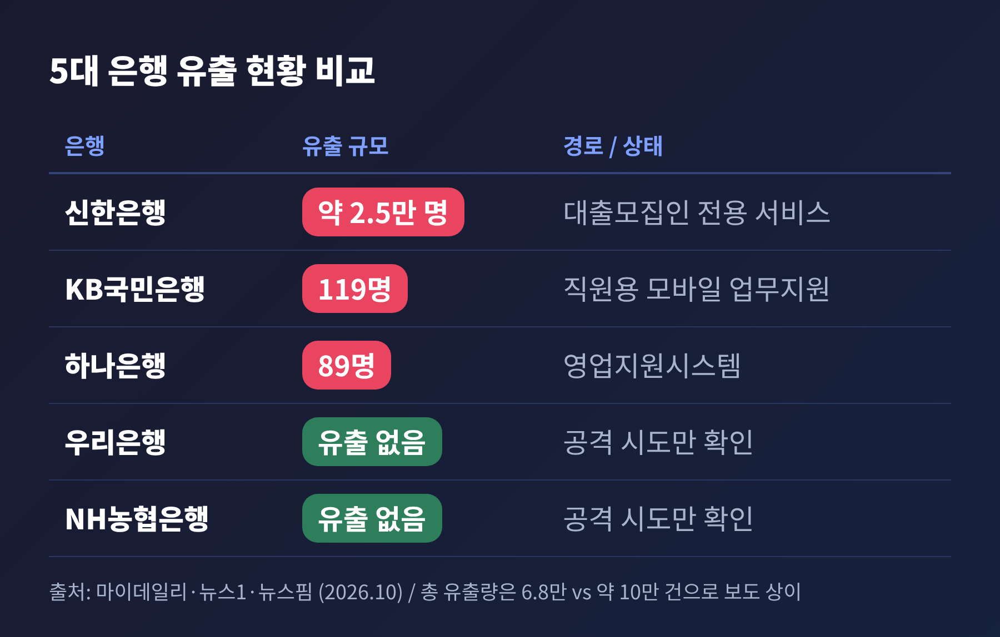
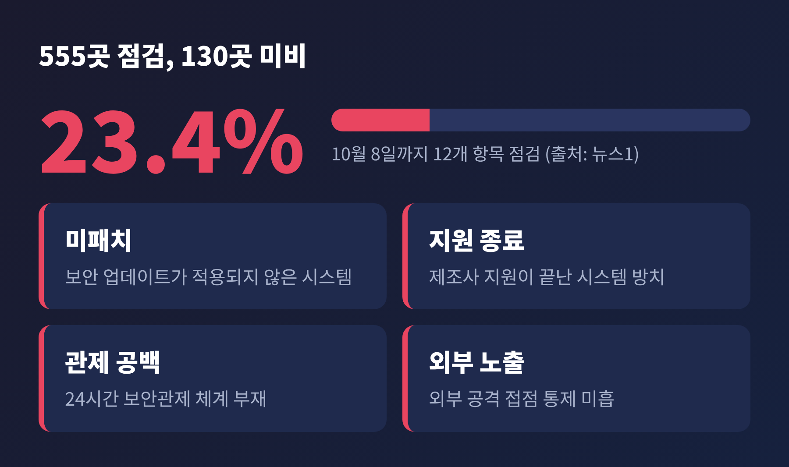
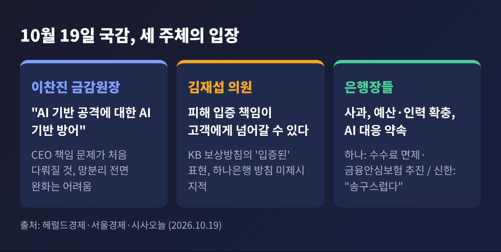
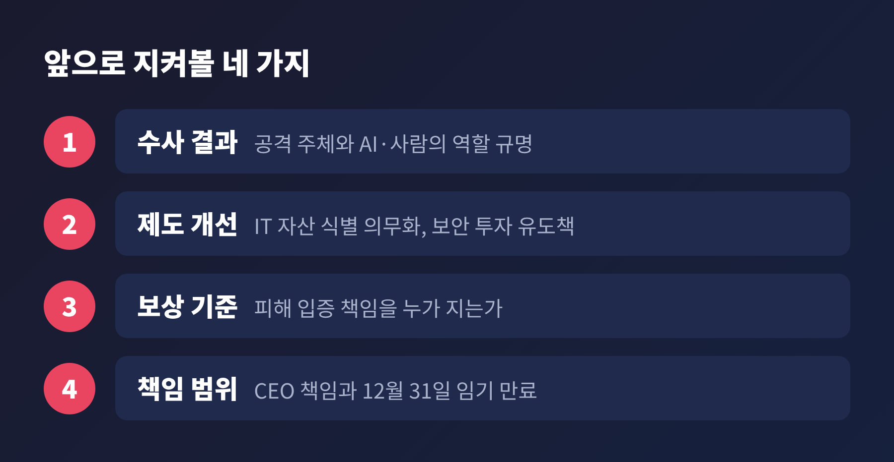

금융권 연쇄 해킹, 5대 은행장 국감 출석…유출 책임과 재발 방지 쟁점

세 줄 요약
- 9월 30일 신한·KB국민은행에서 시작된 해킹은 저축은행과 캐피탈사까지 번져 7개 금융사 피해로 확인됐습니다.
- 19일 국회 정무위 금감원 국감에 5대 은행장이 4년 만에 함께 증인으로 나와 사과하고 보안 투자 확대를 약속했습니다.
- 쟁점은 늦은 탐지, 고객에게 쏠린 피해 입증 부담, 그리고 CEO 책임입니다.
오늘은 금융권을 흔든 연쇄 해킹과, 19일 열린 금융감독원 국정감사의 핵심 쟁점을 정리해 보겠습니다. 확인된 사실 위주로 경과, 피해 규모, 당국 대응, 앞으로의 전망 순으로 살펴봅니다.
무슨 일이 있었나
발단은 9월 30일입니다. 이날 신한은행과 KB국민은행에서 외부 침입이 확인됐습니다. 이후 하나은행, BNK부산은행, 예가람저축은행, 웰컴저축은행, 현대캐피탈까지 모두 7곳에서 침해사고가 보고됐습니다(마이데일리, 10월 6일 보도). 공격은 닷새가량 이어진 것으로 전해집니다(KMJ).
금융당국은 7곳 모두에서 동일 공격자로 추정되는 IP를 확인했습니다. 금융보안원은 추적 과정에서 중국어권 AI 침투 테스트 도구 '아르텍스(ARTEX)'의 흔적을 발견했습니다. 그래서 'AI 활용 추정 공격'이라는 표현이 붙었습니다. 다만 같은 IP가 나왔다는 사실만으로 한 조직의 소행이라고 단정할 수는 없다는 것이 마이데일리 보도의 설명입니다.

피해는 얼마나 되나
규모가 가장 큰 곳은 신한은행입니다. 대출모집인 전용 서비스에서 본인 확인을 우회한 접근이 이뤄져 약 2만 5천 명의 정보가 유출됐습니다. 이름, 전화번호, 연소득, 산출 한도 등이 포함됐습니다. KB국민은행은 직원용 모바일 업무지원시스템에서 119명, 하나은행은 영업지원시스템에서 89명의 정보가 나갔습니다. 저축은행 쪽에서는 예가람저축은행 약 4만 명, 웰컴저축은행 법인고객 정보 2,200건이 거론됩니다.
총량은 보도마다 다릅니다. KMJ와 주간경향은 약 6만 8천 명(건)이라고 전했고, 뉴스1은 16개 금융사에서 약 10만 건이 유출된 것으로 확인됐다고 썼습니다. 집계 시점과 범위가 다른 것으로 보이지만, 정확한 사유는 확인되지 않았습니다. 당국 조사가 끝나면 숫자가 달라질 수 있습니다.
그나마 알려진 다행도 있습니다. 계좌번호와 이체 비밀번호는 유출되지 않은 것으로 알려졌고(머니투데이), 실제 금전 피해도 아직 확인되지 않았습니다(주간경향). 우리은행과 NH농협은행은 공격을 받았지만 정보 유출로 이어지지 않았습니다.

왜 중요한가
첫째, 뚫린 곳이 은행의 핵심 전산망이 아니라 변두리였다는 점입니다. 주간경향은 대출모집인 시스템, 영업지원 플랫폼 같은 이른바 '섀도 IT'가 주로 표적이 됐다고 짚었습니다. 수법도 유출된 아이디와 비밀번호를 무작위로 대입하는 방식이어서 새로울 것이 없었습니다. 반면 우리·농협은 다중 인증과 접속 권한 관리 같은 기본기가 방어에 도움이 된 것으로 설명됩니다.
둘째, 탐지가 늦었습니다. KMJ에 따르면 신한은행은 공격 시작 15시간 만에 침입을 인지했고, KB국민은행은 공격 종료 25시간 뒤에야 상황을 파악했습니다. 신한은 금융위 개인신용정보 보호 실태 점검에서 6년 연속 최고 등급을 받았고, KB는 개인정보보호 국제인증 취득을 내세워 왔습니다. 인증과 현실 사이의 간극이 드러난 셈입니다.
셋째, 반복입니다. 지난해 통신사와 롯데카드 사고 뒤 정부는 1,600여 개 IT 시스템을 점검했습니다. 그런데도 1년이 채 안 돼 같은 유형의 사고가 났습니다(주간경향). 이억원 금융위원장은 8일 국감에서 은행의 대응이 "기본적인 부분부터 매우 미흡"했다고 질타했습니다.
당국은 어떻게 움직였나
금융당국은 10월 1일부터 약 500개 금융회사에 공격 IP를 전파했고, 4일에는 전 업권 긴급 대응회의를 열었습니다. 경찰은 6일 정식 수사로 전환해 28명 규모의 전담팀을 꾸렸습니다. 이재명 대통령도 국무회의에서 인력과 자원을 집중하라고 지시했습니다.
점검 결과도 나왔습니다. 10월 8일까지 555개 금융회사를 12개 항목으로 점검했더니 130곳, 23.4%에서 미비점이 나왔습니다. 미패치 시스템, 지원이 끝난 시스템 방치, 24시간 보안관제 부재 등이 지적됐습니다(뉴스1).

국감장에서 오간 말
19일 정무위 금감원 국감에는 이환주 KB국민, 정상혁 신한, 이호성 하나, 정진완 우리, 강태영 NH농협은행장이 증인으로 나왔습니다. 5대 은행장이 한꺼번에 국감 증인이 된 것은 2022년 이후 4년 만입니다.
이찬진 금감원장은 모두발언에서 "AI 기반 공격에 대한 AI 기반 방어"를 내세웠습니다. 취약점 분석 강화, IT 자산 식별·관리 의무화, AI를 활용한 모의해킹 확대가 대책의 골자입니다. 보안 예산과 인력 투자를 유도하는 방안은 금융위와 협의 중이며, 구체안은 정해지지 않았습니다(헤럴드경제). 이 원장은 이번 사건에서 CEO 책임 문제가 처음으로 다뤄질 것이라고 말했고, 망분리 규제의 전면 완화는 어렵다고 선을 그었습니다(서울경제).
은행장들은 일제히 사과했습니다. 이환주 행장은 예산과 인력을 충분히 확보하고 AI 공격에 AI로 대응하겠다고 했습니다. 정상혁 행장은 인지 지연과 유출 책임에 "송구스럽게 생각한다"고 답했습니다. 이호성 행장은 수수료 면제를 시행했고 금융안심보험 가입을 추진하며, 피해가 발생하면 보상하겠다고 밝혔습니다. 정진완 행장은 우리은행이 유출을 피한 것을 두고 "운이 좋았다고 생각한다"고 말했습니다.
야당 김재섭 의원(국민의힘)의 질타는 보상 방식에 집중됐습니다. 신한은 자신의 유출 여부를 조회한 고객이 약 5,680명으로 대상자의 22% 수준이었고, KB 보상 방침에는 '입증된'이라는 표현이 들어 있어 피해 입증 책임이 고객에게 넘어갈 수 있다는 지적이었습니다(시사오늘). 은행 쪽은 보상 절차를 점검했고 공격 IP 차단과 이상징후 모니터링을 이어가고 있다는 입장입니다.

엇갈리는 시각과 남은 쟁점
AI의 역할을 어떻게 볼지부터 갈립니다. SK쉴더스는 AI가 새로운 기법을 만든 것이 아니라 기존 공격 절차를 자동화해 규모를 키운 사례로 봤습니다. 김명주 서울여대 교수는 AI 여부와 상관없이 기본 점검이 먼저이고, 'AI 해킹'에만 초점을 맞추면 은행의 기본 책임을 놓칠 수 있다고 말했습니다. 반대로 최대선 숭실대 센터장은 AI 악용 공격이 보편화될 것이므로 핵심 시스템만 보는 점검으로는 부족하다고 진단했습니다.
책임 범위도 쟁점입니다. 머니투데이는 신용정보법상 과징금 상한이 50억 원이고, 롯데카드 사례처럼 CEO에 대한 중징계는 쉽지 않을 것이라는 관측을 전했습니다. 5대 은행장의 임기는 모두 12월 31일에 끝납니다. 국감 대응이 연임 판단에 영향을 줄 수 있다는 분석이 나오는 이유입니다(뉴스1). 다만 이는 관측일 뿐 확정된 사실은 아닙니다.
공공 부문의 자원 문제도 있습니다. KMJ에 따르면 한국인터넷진흥원 취약점관리센터의 내년도 운영 예산 91억 원이 전액 반려됐습니다. 은행에는 투자를 요구하면서 공공 쪽 방어 역량은 빠듯하다는 지적을 피하기 어렵습니다.
앞으로의 전망
단기적으로는 세 가지를 지켜봐야 합니다.
- 수사 결과: 공격 주체와 AI·사람의 역할이 밝혀질지. 크라우드스트라이크의 추정 보고서는 확정이 아닙니다.
- 제도 개선: IT 자산 식별 의무화와 보안 투자 유도책이 어떤 형태로 구체화될지.
- 보상 기준: 고객이 피해를 직접 입증해야 하는지, 은행이 먼저 책임지는 구조로 갈지.

중장기적으로는 일회성 점검의 한계를 넘는 상시 점검 체계가 관건입니다. 외주·협력사 시스템까지 관리 범위에 넣을 수 있느냐가 핵심 과제로 남습니다. 은행으로서는 보안 비용이 늘고, 고객으로서는 개인정보 관리에 더 신경 써야 하는 시기입니다. 유출 대상 여부 조회, 의심 문자 주의 같은 기본 수칙은 당분간 유효합니다.
정리하면 이렇습니다. 이번 사건이 남긴 질문은 'AI가 얼마나 무서운가'보다 '기본을 얼마나 지켰는가'에 가깝습니다. 은행장들의 사과가 실제 투자와 구조 개선으로 이어지는지는, 앞으로의 점검 결과가 말해 줄 것입니다.
본 글은 공개된 언론 보도를 바탕으로 한 뉴스 해설이며, 특정 금융사 또는 금융상품에 대한 투자 권유가 아닙니다. 투자 판단과 그에 따른 책임은 투자자 본인에게 있습니다. 수치는 보도 시점 기준이며 이후 달라질 수 있습니다.
출처: MTN(10/8), 세계일보(10/19), 마이데일리(10/6), KMJ(10/6), 주간경향(10/12), 머니투데이(10/6), 뉴스1·파이낸셜뉴스(10/19), 헤럴드경제(10/19), 시사오늘(10/19), 서울경제(10/19), 뉴스핌(10/19)